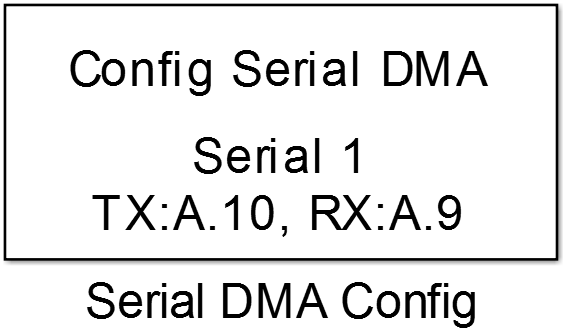
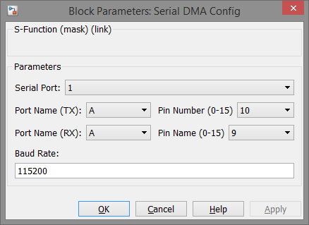

Serial DMA Config
Configuration of serial (UART) communication peripheral with non-blocking DMA data transfer.
Library
Targets/STM/DISCO_F407VG
Description
{kind=link}
This block configures one of the hardware UART peripherals for use with DMA memory to peripheral transfer. The use of DMA transfer makes non-blocking serial communication possible.
Data Type Support
This block has no input or output ports.
Parameters and Dialog Box
Serial Port
Selects the hardware UART peripheral of an STM32 MCU. The port number are related to the actual USART/UART numbers referred to the data sheet of the used MCU.
Port Name
Selects the GPIO port name for the transmit and the receive pin.
Pin Number
Selects the GPIO pin number for the transmit and the receive pin.
Attention
The transmit and receive pin have to match the selected Serial Port in order to function correctly. In case of a mismatched configuration the model will be build and compile without errors and serial communication does not work.
Baud Rate
Speed of data transmission in bits/s.
common values are: 4800, 9600, 19200, 38400, 57600, 115200 but higher baudrates are also possible
Maximum possible value depends on the used MCU and selected UART peripheral.